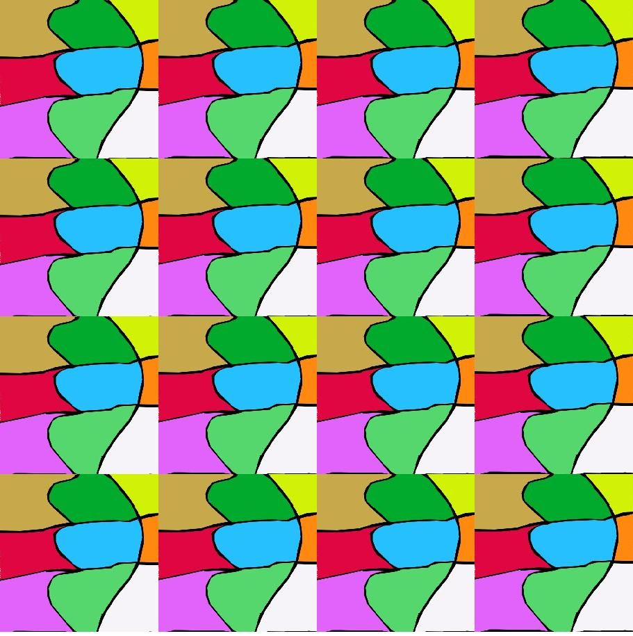
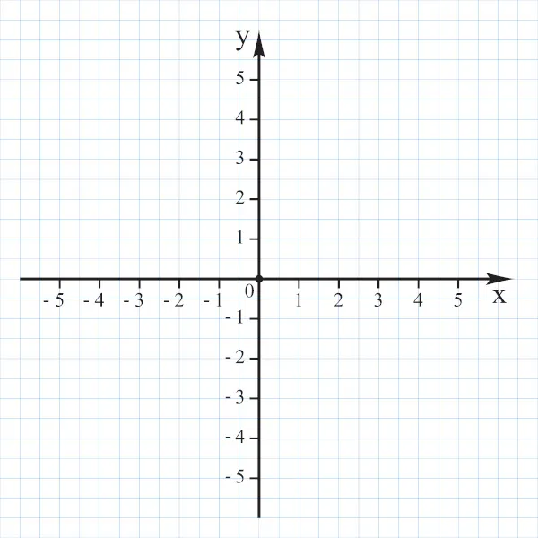
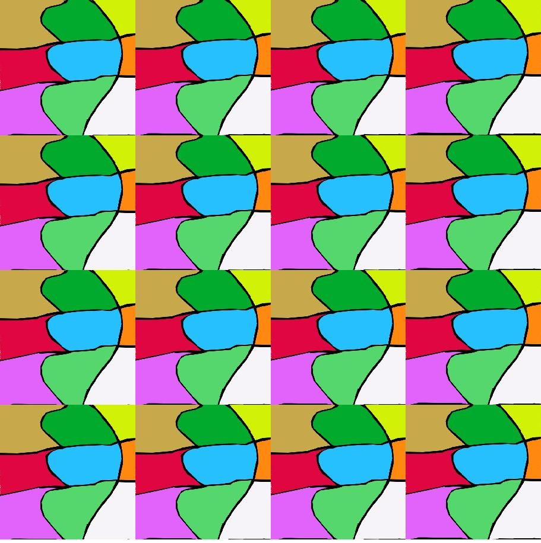
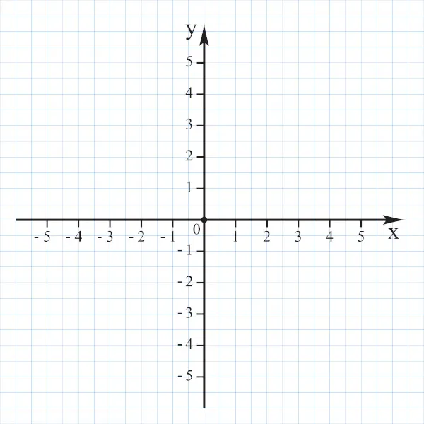
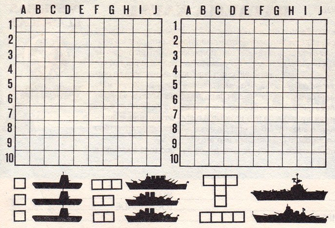

Simetria
Conformidade, em medida, forma e posição relativa, entre as partes dispostas em cada lado de uma linha divisória, um plano médio, um centro ou um eixo.
Exemplo: Reflexão da água, espelho, translação do papel de parede, alguma faixa decorativa,rotação da roda gigante, plano cartesiano GPS, números inteiros dívida e o tanto de dinheiro que tem, adicionou.

 



Rotação
Movimento giratório em torno de um eixo fixo; revolução, giro.
Plano Cartesiano e sua aplicação na criação de jogos
O plano cartesiano é formado por duas retas reais perpendiculares, ou seja, o ângulo entre elas é de 90°.
Jogos e Coordenadas
Um bom exemplo de jogo que ultiliza o plano cartesiano é a batalha naval

Movimentação ultilizando X e Y
Quando criamos um jogo, precisamos entender como o personagem se movimenta na nossa tela
O eixo X é referente a linha hotizontal, já o Y se refere a linha vertical
Exemplo:
- Direita:No eixo X eu vou aumentar a coordenada
- Se jogador está na coordenada X:250 eu somo essa coordenada com mais um(x:250 + 1) e ele avança para a direita.
- Esquerda:No eixo X eu vou diminuir a coordenada
- Se jogador está na coordenada X:250 eu subtraio essa coordenada com menos um(x:250 - 1) e ele volta para a esquerda.
- Cima:No eixo Y eu vou diminuir a coordenada
- Se jogador está na coordenada Y:250 eu subtraio essa coordenada com menos um(y:250 - 1) e ele sobe para a coordenada 249
- Baixo:No eixo X eu vou aumentar a coordenada
- Se jogador está na coordenada Y:250 eu somo essa coordenada com mais um(y:250 + 1) e ele desce para a coordenada 251
Jogos com movimentações em diferentes Eixos